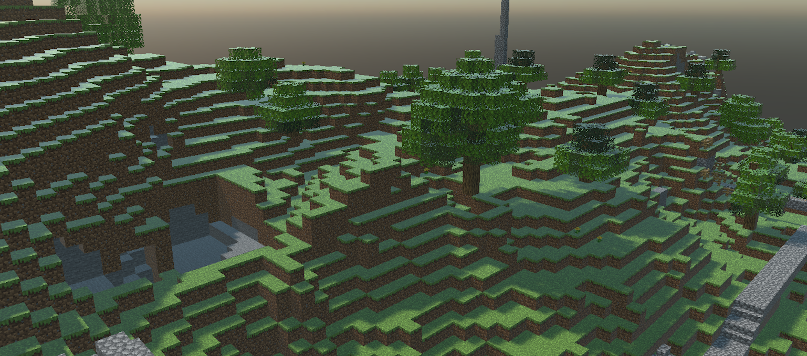
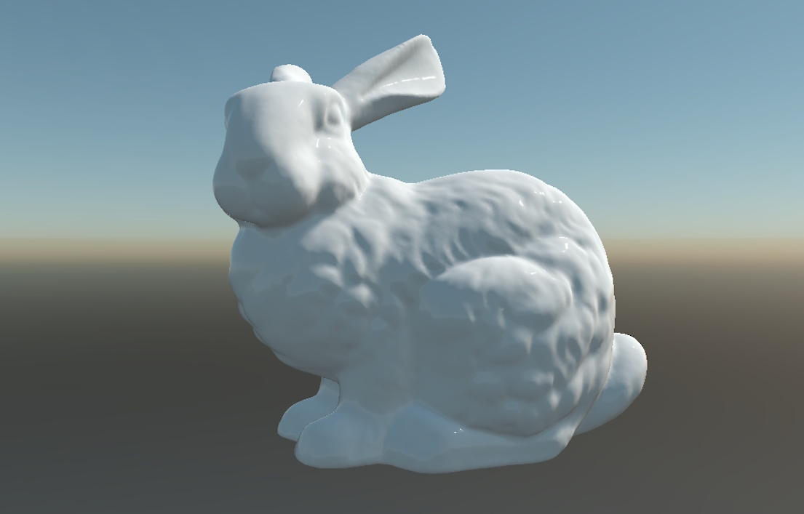
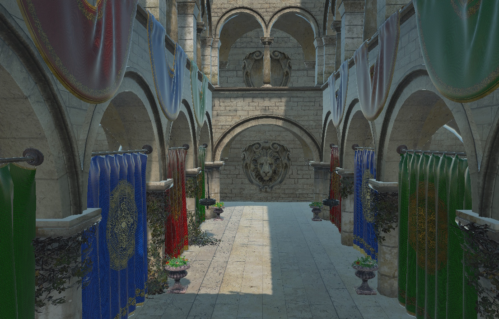
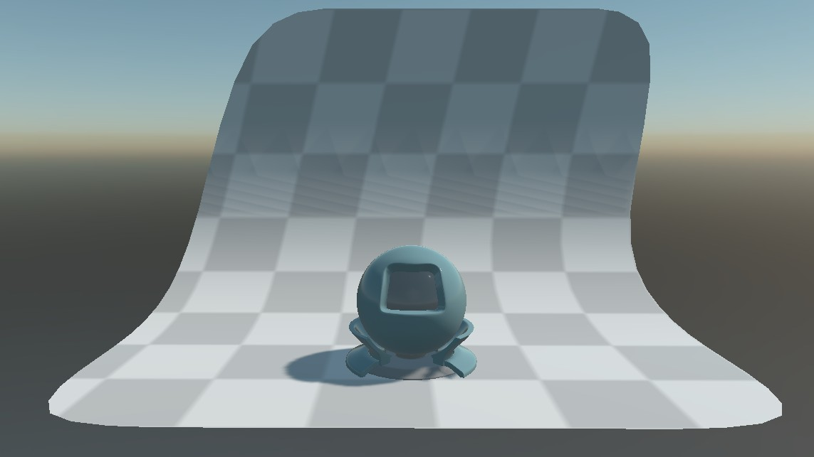
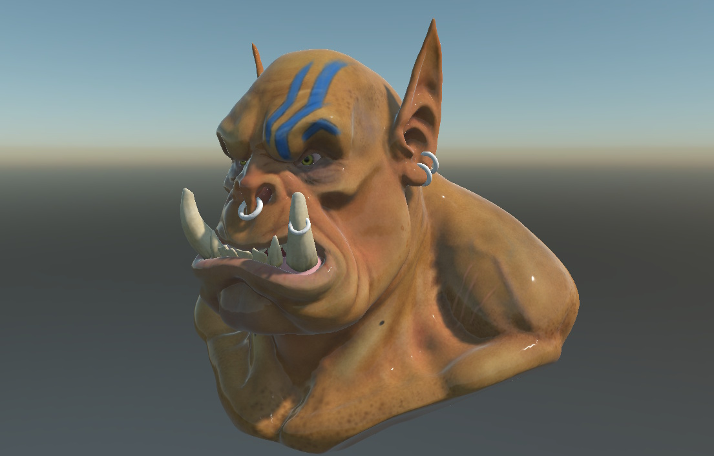

OBJ Runtime

The Evergine.Runtimes.OBJ package reads Wavefront .obj files, together with their .mtl material libraries and textures, while the application runs. It returns a Model, so an OBJ file ends up in the scene exactly like a model imported by Evergine Studio. OBJ is the lowest common denominator of 3D formats, which makes this runtime a good fallback for files exported from scanners, older tools and online repositories.
| Package | Evergine.Runtimes.OBJ |
| Namespace | Evergine.Runtimes.OBJ |
| Class | OBJRuntime (derives from ModelRuntime) |
| Formats | .obj with optional .mtl material libraries |
| Returns | Task<Model> |
| Platforms | All Evergine platforms |
What the runtime reads
Geometry
- Vertex positions, normals and texture coordinates.
- Triangles, quads and larger polygons. Faces with more than three vertices are triangulated.
- Several groups and objects in one file. Each one becomes a mesh of the model.
- Files without normals get flat face normals computed on load.
Only faces are turned into meshes. Point (p) and line (l) elements are parsed but not rendered.
Materials
- The
.mtlfiles referenced bymtllibstatements, resolved relative to the folder of the.objfile. - Diffuse color (
Kd) and dissolve (d, orTras its inverse) as base color and alpha. - The PBR extension values
Pm(metallic) andPr(roughness), and the emissive colorKe. - The diffuse texture (
map_Kd) as the base color texture, in any format the Image runtime decodes (PNG, JPEG, BMP, WebP, KTX).
The default material is a StandardMaterial with lighting and image-based lighting on. A material with an alpha map (map_d) or a PNG diffuse texture uses alpha test; a material with a dissolve value below 1 uses alpha blending.
Note
The .mtl parser also reads normal, specular, metallic, roughness and emissive texture names, but OBJMaterialData only exposes the diffuse texture. The other Get...TextureAndSampler() methods return empty values, so neither the default material nor a custom assigner receives those maps.
Load a model from a file
Read(string filePath, Func<MaterialData, Task<Material>> materialAssigner = null, bool useSmoothNormals = false) reads the file through the application's AssetsDirectory, so the path is relative to the Content folder of the running application. Mark the .obj, .mtl and texture files with Set to export as raw in the Assets Details panel so they reach the output unchanged and keep their relative folders.
using Evergine.Framework;
using Evergine.Framework.Graphics;
using Evergine.Framework.Services;
using Evergine.Runtimes.OBJ;
public class MyScene : Scene
{
protected override async void CreateScene()
{
var assetsService = Application.Current.Container.Resolve<AssetsService>();
// The .mtl file and the textures are looked up in the Models folder, next to orc.obj.
Model model = await OBJRuntime.Instance.Read("Models/orc.obj", useSmoothNormals: true);
Entity entity = model.InstantiateModelHierarchy("orc", assetsService);
this.Managers.EntityManager.Add(entity);
}
}
Smooth normals
| Parameter | Default | Description |
|---|---|---|
| useSmoothNormals | false |
When true, the normals of vertices that share a position are averaged, which hides the facets of curved surfaces. Leave it false for hard-edged models, or when the file already contains the normals you want. |
The value is stored in the UseSmoothNormals property of the runtime, which the stream overload also uses.
Load a model from a stream
Read(Stream stream, ...) accepts any readable, seekable stream. A stream carries no folder, so the runtime resolves mtllib statements and textures against its WorkingDirectory property, a path inside the Content folder. While WorkingDirectory is null, material libraries are skipped and the model loads with default materials.
The following scene downloads an OBJ file over HTTP. The geometry comes from the download; the materials come from the Models folder of the application.
using System.IO;
using System.Net.Http;
using Evergine.Framework;
using Evergine.Framework.Graphics;
using Evergine.Framework.Services;
using Evergine.Framework.Threading;
using Evergine.Runtimes.OBJ;
public class MyScene : Scene
{
private static readonly HttpClient httpClient = new HttpClient();
protected override async void CreateScene()
{
using var response = await httpClient.GetAsync("https://example.com/models/bunny.obj");
response.EnsureSuccessStatusCode();
// The OBJ reader needs a seekable stream; a network stream is not.
using var buffer = new MemoryStream();
await response.Content.CopyToAsync(buffer);
buffer.Position = 0;
OBJRuntime.Instance.WorkingDirectory = "Models";
OBJRuntime.Instance.UseSmoothNormals = true;
Model model = await OBJRuntime.Instance.Read(buffer);
var assetsService = Application.Current.Container.Resolve<AssetsService>();
Entity entity = model.InstantiateModelHierarchy("bunny", assetsService);
// Scene changes must happen on the Evergine main thread.
await EvergineForegroundTask.Run(() => this.Managers.EntityManager.Add(entity));
}
}
Custom materials
Pass a material assigner as the second argument of either Read overload to create the materials yourself. The runtime describes every OBJ material as an OBJMaterialData (a MaterialData), and your function returns the Material to use. The GLB runtime page describes MaterialData and has a complete assigner.
Model model = await OBJRuntime.Instance.Read("Models/orc.obj", this.AssignMaterial);
OBJMaterialData always reports HasVertexNormal = true and HasVertexColor = false, because every mesh the runtime builds has normals and no vertex colors. Cast to OBJMaterialData and read its OBJMaterial field to reach every value parsed from the .mtl file.
Samples
The OBJ runtime has been tested against the Computer Graphics Archive collection by Morgan McGuire, which covers a wide range of real-world meshes, materials and topologies. A few of those models, loaded at runtime:

Stanford Bunny, created by Greg Turk and Marc Levoy from range scans of a real object.
The Atrium Sponza Palace in Dubrovnik, remodeled by Frank Meinl at Crytek after Marko Dabrovic's original.
The material test object of the Mitsuba renderer, converted to a single OBJ file with the backdrop as a separate mesh.
An orc sculpted in ZBrush and exported as OBJ.